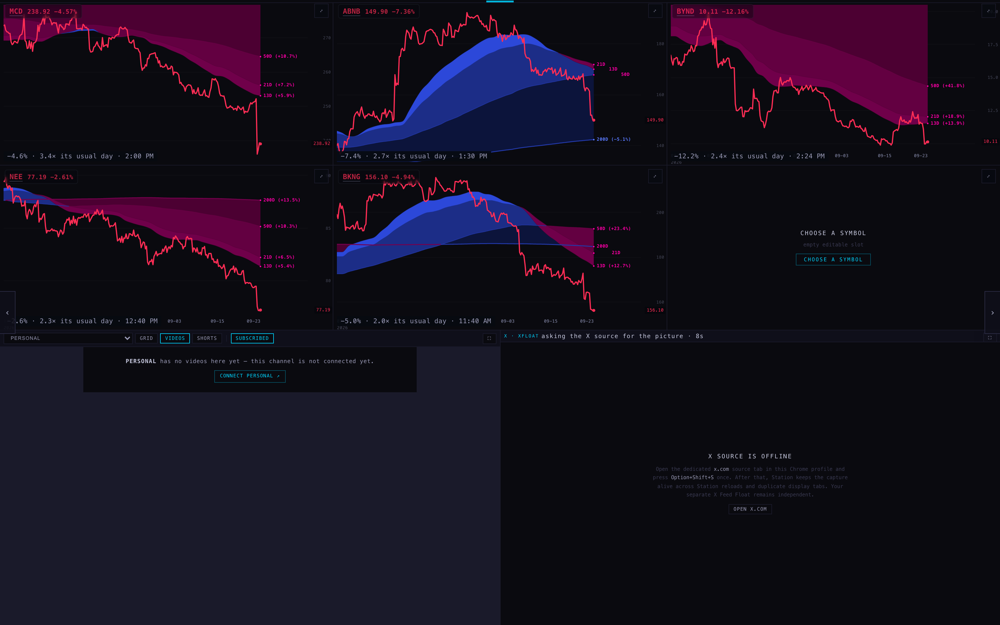
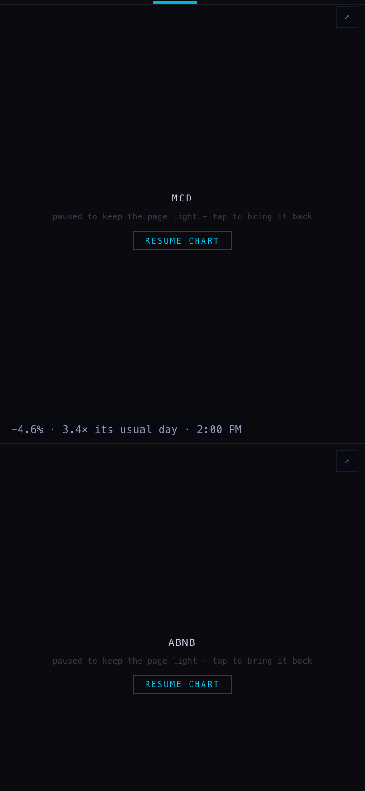

STATION · the SCINTILLAS page
24 September 2026 · Station branch station/scintillas-page-20260924 · nothing deployed
A new page in the Station's page list, called SCINTILLAS. You do not choose anything on it: it fills itself with charts of the names that moved unusually today, biggest first, and each chart says why it is on the page.
What the page shows
- Which names. The most recent scintillas, one chart per name. When a new one arrives and the wall is full, the oldest chart comes off — never the smallest.
- In what order. What is left is arranged biggest first, so the loudest name is chart one.
- Why each one is there. In the bottom-left corner of every chart, in plain words:
−12.2% · 2.4× its usual day · 2:24 PM. - When there is nothing. The readout says "no scintillas stored today" and the wall stays empty, rather than showing yesterday's names.
It behaves like every other page: the arrows walk onto it, it has its own button on the rail at the same fixed width as the others, and it is in the jump list. Auto-rotate does not visit it — it is a page you go to, not a slideshow.

1680 wide, with 23 September's five stored scintillas: MCD (3.4× its usual day), ABNB (2.7×), BYND (2.4×), NEE (2.3×), BKNG (2.0×) — biggest first, sixth slot honestly empty. Each chart carries its reason along the bottom. Charts drawn live from the chart API.

390 wide (phone): the same page, stacked, the reason still legible at 11px. The charts are paused here — that is the Station's existing phone behaviour ("paused to keep the page light"), not part of this work.
Where each number comes from
| What | Where it comes from |
|---|---|
| which names, and when | public.scintillas — the same rows the Hub's strip lists, written by the detector every ten minutes through the session |
| the percentage | that row's own move_pct: the day's move the detector measured |
| "2.4× its usual day" | that row's own measure of how far the move is beyond the name's own usual day, over its last 60 sessions |
| the time | when the scintilla was detected, in New York time |
| the charts | the Station's own chart, exactly as every other page draws it |
What could be wrong
- The page is only as good as the store. If the detector has not run, the page is empty and says so — it cannot tell the difference between a genuinely quiet day and a detector that stopped.
- It shows the day's outliers, not a recommendation. A big move is a pointer to look, nothing more.
- Six charts is the wall. On a heavy day the store can hold twenty names; the page shows the newest six of them, so names can appear and disappear during the session as fresher ones arrive.
- Only tickers get charts. An economic surprise is a scintilla too, but there is nothing to chart, so it never takes a slot.
- The reason line is clipped by a character or two on the left-most chart of the bottom row at 1680 — seen in the capture above, cosmetic, not yet fixed.
- The capture was made locally with the Supabase read answered from a fixture and the chart API proxied with the origin it accepts (it only allows scintillahub.ai). The page's own code was not changed for it.
What I did not do
- Nothing was deployed or pushed; the Station's other pages, their rows and their order are untouched.
- The page writes nothing — it only reads.
- No new chart type, no new timeframe, no change to the dock, the rail geometry or the arrows.
- It is deliberately not in the auto-rotation.